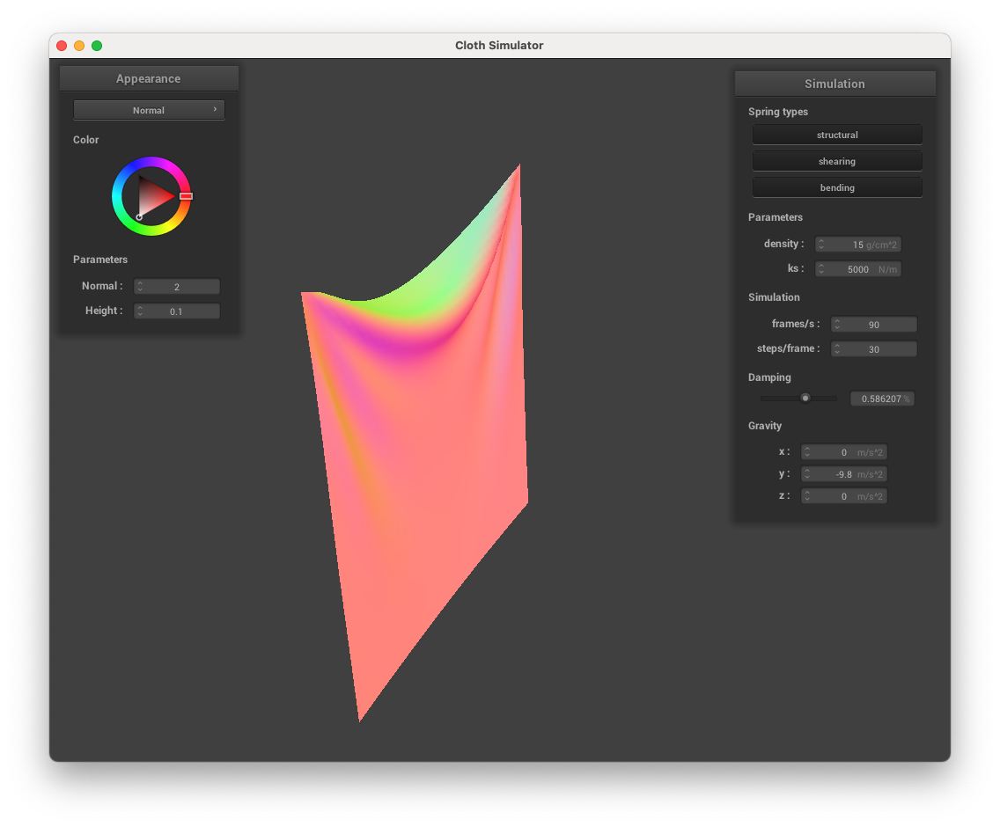
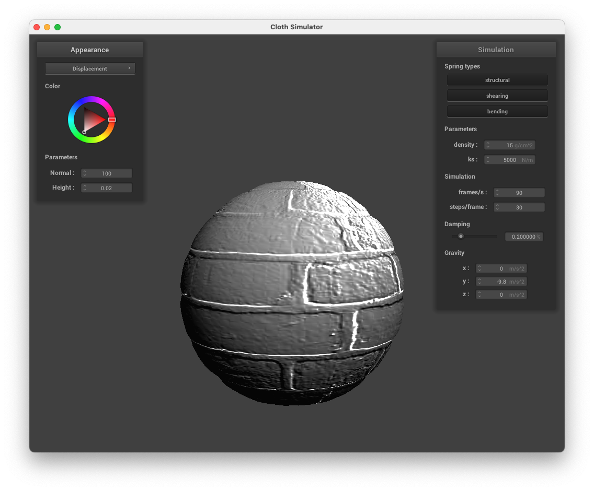

Link to Site: https://cal-cs184-student.github.io/sp22-project-webpages-doinksta/proj4/index.html
Part 1
Take some screenshots of scene/pinned2.json from a viewing angle where you can clearly see the cloth wireframe to show the structure of your point masses and springs.
Show us what the wireframe looks like (1) without any shearing constraints, (2) with only shearing constraints, and (3) with all constraints
 |
 |
 |
| No Shear |
Only Shear |
All constraints |
Part 2
Experiment with some the parameters in the simulation. To do so, pause the simulation at the start with P, modify the values of interest, and then resume by pressing P again. You can also restart the simulation at any time from the cloth's starting position by pressing R.
Describe the effects of changing the spring constant ks; how does the cloth behave from start to rest with a very low ks? A high ks?
What about for density?
What about for damping?
For each of the above, observe any noticeable differences in the cloth compared to the default parameters and show us some screenshots of those interesting differences and describe when they occur.
When we change the spring constant, we find that the smaller spring constant has more folds while it is falling, while the larger spring constant looks relatively stiff as it is falling. Their resting positions correspond to how stiff the cloth is, with the smallest one having many folds in its resting position, while the larger spring constant only has one major fold.
| State |
KS = 10 |
KS = 5000 |
KS = 100000 |
| Halfway |
 |
 |
|
| Resting |
|
|
 |
When we change the density of the point masses, we find that the least dense has the least amount of sagging of the cloth from the pinned corners, while the more dense has larger sagging due to the force of gravity being larger when the masses of each point increase. The larger point masses also seem to correspond with more folding of the cloth, probably due to the increase of mass of each of the point masses makes the spring force larger.
| State |
Density 1 |
Density 15 |
Density 5000 |
| Halfway |
 |
 |
 |
| Resting |
 |
 |
|
When you increase the damping constant, it takes longer for the cloth to fall since the spring force is smaller. We see that in the second row compared to the first, it takes longer to reach the resting state.
| Damping |
t0 |
t1 |
t2 |
t3 |
Resting State |
| 0.2 (default) |
 |
|
|
 |
|
| 0.586 |
|
 |
|
|
 |
Show us a screenshot of your shaded cloth from scene/pinned4.json in its final resting state! If you choose to use different parameters than the default ones, please list them.
Part 3
Show us screenshots of your shaded cloth from scene/sphere.json in its final resting state on the sphere using the default ks = 5000 as well as with ks = 500 and ks = 50000. Describe the differences in the results.
Smaller spring constant has more folds on itself, and the larger spring constant has less folds, which corresponds with how rigid the cloth is. This corresponds with what the spring constants mean, as the higher the spring constant, the more rigid the cloth is.
|
 |
 |
| KS = 500 |
KS = 5000 |
KS = 50000 |
Show us a screenshot of your shaded cloth lying peacefully at rest on the plane. If you haven't by now, feel free to express your colorful creativity with the cloth! (You will need to complete Part 5 first to show custom colors for anything but the "Wireframe" material.)
 |
| cloth lying peacefully |
Part 4
Show us at least 3 screenshots that document how your cloth falls and folds on itself, starting with an early, initial self-collision and ending with the cloth at a more restful state (even if it is still slightly bouncy on the ground).
Vary the density as well as ks and describe with words and screenshots how they affect the behavior of the cloth as it falls on itself.
Low density (the thing weighs less): fewer ripples initially, and it’s more smoothly folded in the end (not collapsed on itself as much)
High density: lots of ripples initially, but localized only at the bottom of the cloth hitting the table. At the end, cloth is a lot more wrinkly and compressed
Low ks case looks like the high density case, lots of ripples folded in on itself.
High ks case looks like the low density case, where there's fewer ripples and folded in on itself.
| KS |
Density |
Start |
Mid |
End |
| 5000 (Default) |
15 (Default) |
 |
 |
 |
| 500 |
15 |
 |
 |
 |
| 50000 |
15 |
 |
|
|
| 5000 |
1 |
|
|
 |
| 5000 |
5000 |
|
 |
 |
Part 5
Explain in your own words what is a shader program and how vertex and fragment shaders work together to create lighting and material effects.
A shader program is a program written in GLSL that is placed on the GPU to accelerate graphics rendering. The two types of shader programs used in this assignment are vertex and fragment shaders. Vertex shaders assign properties to individual vertices, such as color, normal vector direction, tangent vector direction, etc. The output of the vertex shader is then sent to the fragment shader, which handles interpolating the properties of individual vertices over points in between the original vertices (e.g. over triangular surfaces). The fragment shader then can be instructed on how to use these interpolated properties of points to determine the fragment’s final color; examples of this include interpolating colors of original vertices, or using the location associated with the fragment to sample from a texture or material map. The final fragment colors are then sent to the renderer to be drawn on the screen.
Explain the Blinn-Phong shading model in your own words. Show a screenshot of your Blinn-Phong shader outputting only the ambient component, a screen shot only outputting the diffuse component, a screen shot only outputting the specular component, and one using the entire Blinn-Phong model.
The Blinn-Phong shading model attempts to create plausible lighting effects for objects of different material types. The model has three main components that are added together to determine the final luminance at each point on an object.
The Blinn-Phong shading model is a not physically based model of lighting, but rather categorizes lighting into three components, the ambient global lighting which is added to every point, the diffuse lighting which depends on the lighting direction, and the specular lighting for shiny parts of objects.
|
|
|
|
| Ambient |
Diffuse |
Specular |
All |
Show a screenshot of your texture mapping shader using your own custom texture by modifying the textures in /textures/.
Show a screenshot of bump mapping on the cloth and on the sphere. Show a screenshot of displacement mapping on the sphere. Use the same texture for both renders. You can either provide your own texture or use one of the ones in the textures directory, BUT choose one that's not the default texture_2.png. Compare the two approaches and resulting renders in your own words. Compare how your the two shaders react to the sphere by changing the sphere mesh's coarseness by using -o 16 -a 16 and then -o 128 -a 128.
The two approaches are the same up until you displace the position of the point on either the sphere or the cloth for the displacement method. Therefore, we see more 3D texture for the displacement method, and it renders the height map more realistically in conjunction with the bump method, which affects the texture by modifying the direction of the normal.
|
|
|
 |
| Bump Cloth |
Bump Sphere |
Displacement Cloth |
Displacement Sphere |
The lower resolution mesh grid appears more blocky, and therefore, the displacement mapping change the geometry at only a couple of locations, so it was very granular. However, when we use 128, we find that there is alot of geometrical texture changes and is much smoother.
|
|
|
|
| Bump 16 |
Bump 128 |
Displacement 16 |
Displacement 128 |
Show a screenshot of your mirror shader on the cloth and on the sphere.